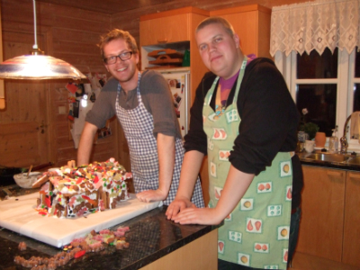

Julelåter
av Ole Magnus og Magnus
God Jul fra oss!
Velkommen!
Er livet trist og grått? Skulle du ønske julen varte hele året? Vel, det gjør den heldigvis ikke, men som et plaster på såret kan du nå høre dine favorittjulesanger hele året her: på internettet!
God jul fra Magnus og Ole Magnus.

2009: "Jul på Månen"

En sang som forteller hvordan man kommer i skikkelig julestemning selv om man befinner seg på månen.
Last ned
